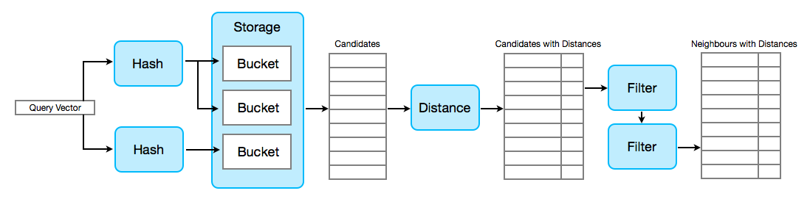
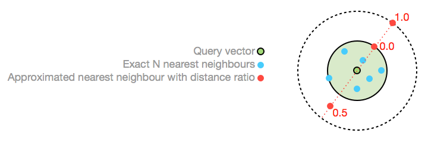
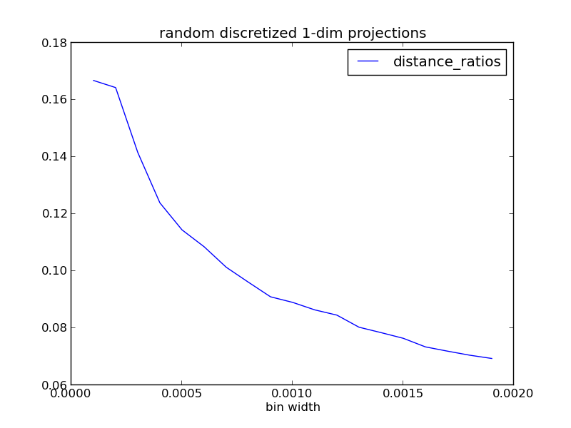
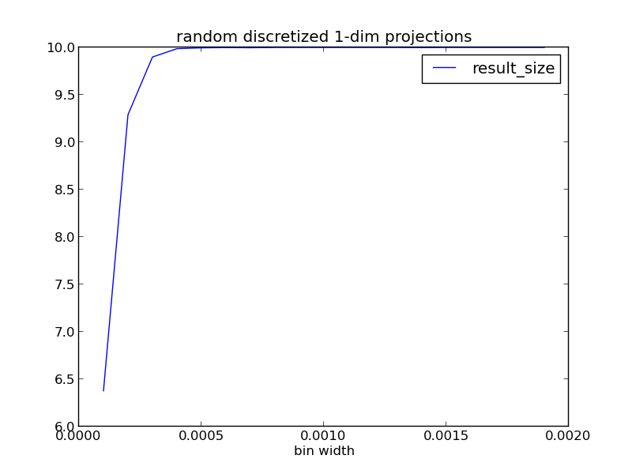
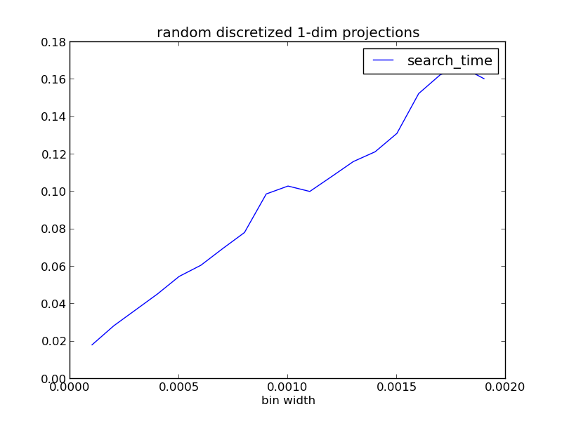

NEARPY - PIPELINE - USAGE - EXPERIMENTS - STORAGE
ANN search in large, high-dimensional data sets (in python)
NearPy is a simple yet modular little framework for ANN search written in the very popular programming language Python. It uses the also very popular Python frameworks numpy and scipy, which provide functionalities for scientific computing.
In many pattern matching applications, like image retrieval, audio search or text mining, the feature space is high-dimensional and the database contains millions of items. When looking for items similar to a query, it is not feasible to compare it to the whole data set. This is where Approximated Nearest Neighbour methods and especially locality-sensitive hashes come in handy.
At 1kdims we are experimenting with search technologies for different types of data and recently had a real need for a framework to fine-tune and evaluate ANN methods.
NearPy indexes and searches vectors using a modular pipeline, the Engine, build from four different kinds of objects.

Given a single vector as input, hashes generate one or more bucket keys from it. During indexing, the vector is then stored in one specific bucket for each key. During search, the neighbour candidates are collected from all these buckets. Hashes should in general be locality-sensitive, thus preserving the spatial structure to some degree. Close vectors should be put in the same buckets. The pipeline can use one or multiple hashes at the same time.
Storage adapters store and return bucket contents. There are currently adapters for in-memory and redis.
After candidates have been collected from all the matching buckets in storage, the distance to the query vector is computed for all of them. Which distance measure is used is up to you. There are currently two distances available (euclidean and angular), but you can simply implement your own to customize what "near" means in your application. If your application does not need a distance measure because the locality-sensitivity of the hashes is enough, you can set distance=None in the engine constructor.
The last step in the pipeline is an optional filter chain. These filters get lists of (vector, data) or (vector, data, distance) tupels, depending on the existence of a distance in the pipeline. They return lists of the same kind but mostly subsets of the input. What these filters actually do, is up to the implementation. NearPy brings three commonly used filters, NearestFilter, DistanceThresholdFilter and UniqueFilter.
import numpy
from nearpy import Engine
from nearpy.hashes import RandomBinaryProjections
# Dimension of our vector space
dimension = 500
# Create a random binary hash with 10 bits
rbp = RandomBinaryProjections('rbp', 10)
# Create engine with pipeline configuration
engine = Engine(dimension, lshashes=[rbp])
# Index 1000000 random vectors (set their data to a unique string)
for index in range(100000):
v = numpy.random.randn(dimension)
engine.store_vector(v, 'data_%d' % index)
# Create random query vector
query = numpy.random.randn(dimension)
# Get nearest neighbours
N = engine.neighbours(query)
NearPy brings two classes for experiments. RecallPrecisionExperiment and DistanceRatioExperiment. They allow to evaluate different engine configurations, hashes, distances and filters on a custom data set.
We found out that recall and precision are no good measures when it comes to ANN, because they focus on the actual vectors in the result set. In ANN we are more interested in the preservation of spatial structure and do not care too much, if the result set contains all the exact neighbours or not. So in our eyes a much better measure is the average ANN distance ratio of all the vectors in the data set. We do not know if this has been used before, but we find it to be a really good measure to determine how a certain ANN method performs on a given data set.
The distance ratio of an ANN y is it's distance to the minimal hypersphere around the query vector x, that contains all exact nearest neighbours n, clamped to zero and normalized with this hypersphere's radius.

This means, that if the average distance ratio is 0.0, all ANNs are within the exact neighbour hypersphere. A ratio of 1.0 means the average ANN is 2*R away from the query vector.
Show / Hide formal definition of distance ratios
These three plots are the result of one experiment with random data (dim=100, count=10000) and N=10. Experiments return average ANN distance ratio, result size and search time (with respect to exact search time) for each engine configuration in the experiment. In this experiment four random discretized 1-dim projection hashes were used with varying bin widths.
|  |  |  |
From the plots one can see, that with increasing bin width, search time and size of the result list increase. This is simply the case, because the larger the bin, the more vectors are contained in each bin. At the same time, the distance ratio decreases, because more vectors in each bin mean more close neighbours of the query vector. So in this particular case, with a search time of only about 6% compared to the exact search, the average ANN is only 12% outside of the exact neighbour hypersphere (N=10), which is not bad for a first shot.
Download the source code for this experiment here.
The default storage is in-memory, realized by simple Python structures. To use instead the redis adapter, do this:
from redis import Redis
from nearpy.storage import RedisStorage
redis_storage = RedisStorage(redis.Redis(host='localhost', port=6379, db=0))
engine = Engine(dimension, lshashes=[myHash1],
vector_filters=[myFilter1, myFilter2], storage=redis_storage)
{kind=link}
{kind=link}
{kind=link}